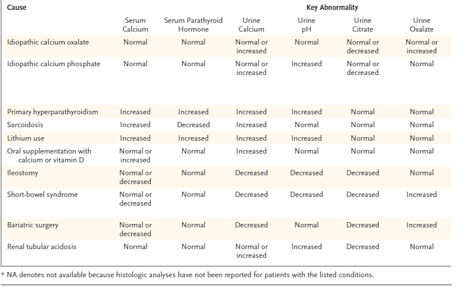

Clinical Workup for Kidney Stones & Nephrocalcinosis
Nephrocalcinosis: calcium phosphate in kidney, forms in
alkaline urine
- Nephrocalcinosis refers to increased calcium deposition in the
kidney, often in the form of calcium oxalate or calcium phosphate.
- Some Pedants suggest reserving “nephrocalcinosis” for calcium
phosphate deposits only, with calcium oxalate deposits termed
oxalosis.
- Can be found incidentally or associated with acute/chronic kidney
injury.
Etiology
Nephrocalcinosis results from conditions causing hypercalcemia,
hyperphosphatemia, hypercalciuria, hyperphosphaturia, and
hyperoxaluria
Common Causes & Associations
- Primary Hyperparathyroidism: Seen in up to 22% of cases, with
hypercalciuria overshadowing calcium reabsorption.
- Sarcoidosis: Up to 50% of patients with renal involvement develop
nephrocalcinosis.
- Vitamin D Excess: Can lead to hypercalcemia and hypercalciuria,
especially when combined with phosphate supplements.*
- Distal Renal Tubular Acidosis: Most common cause of nephrocalcinosis
from hypercalciuria without hypercalcemia.
- Medullary Sponge Kidney: Up to 50% of cases show
nephrocalcinosis.
- Loop Diuretic Use: Prolonged high doses can lead to
nephrocalcinosis.
Hereditary Disorders
- Dent Disease: X-linked condition associated with
hypercalciuria, nephrocalcinosis, nephrolithiasis, and rickets.
- Hypophosphatemic Rickets: Leads to nephrocalcinosis
due to disturbances in phosphate handling.
- Hypercalciuria with Hypercalcemia:
- Primary hyperparathyroidism
- Vitamin D therapy
- Sarcoidosis
- Milk-alkali syndrome
- Congenital hypothyroidism
- Hypercalciuria without Hypercalcemia:
- Distal renal tubular acidosis (RTA)
- Medullary sponge kidney
- Loop diuretic use
- Inherited tubulopathies
- Chronic hypokalemia
- Beta-thalassemia
- Hyperphosphaturia with Hyperphosphatemia:
- Tumor lysis syndrome
- Oal sodium phosphate bowel preparations
- Hyperphosphaturia without Hyperphosphatemia:
- Inherited tubulopathies (e.g., Dent disease, Lowe syndrome)
- Hypophosphatemic rickets
Medical History to Review
- Gastrointestinal Disorders: Chronic diarrhoea
(e.g., bowel disease), malabsorption, intestinal surgery, bariatric
surgery
- Systemic Diseases: Sarcoidosis, gout, renal tubular
acidosis (RTA)
- Bone Diseases: PTH-related disorders, idiopathic
hypercalciuria, multiple myeloma
- Other Factors: Immobilization (e.g., due to
prolonged illness), hyperthyroidism, renal anomalies
Medication Review
- Topiramate
- Calcium supplements
- Carbonic anhydrase inhibitors
- Alkali therapy
- Vitamin D supplements
Dietary Review
- Oxalate-rich foods: Nuts, spinach, ascorbic
acid
- Salt intake: High salt can influence stone
formation
- Eating disorders or unusual diets: Assess dietary
habits
Family History
- History of kidney stones or related metabolic conditions in the
family.
Imaging Studies
- Initial Evaluation: Non-contrast CT scan is
preferred.
- Follow-up: Ultrasound is acceptable.
Workup
Blood Tests
- include:
- Parathyroid hormone (PTH)
- Comprehensive Metabolic Panel (Chem20)
- ACE
- TFT
- Chem 20
- FBC
24-Hour Urine Collection
- When to collect:
- At diagnosis and periodically during follow-up (e.g., every 6
months)
- Start with TWO samples : Aim for one collection on a workday and one
on a non-working day.
- Ensure patients follow their usual daily diets during
collection.
- Analytes to measure:
- pH (using a pH meter, not dipsticks)
- calcium
- oxalate
- citrate
- uric acid
- Sodium
- potassium
- magnesium
- phosphate
- chloride
- sulfate
- ammonium
- creatinine
- urea
- cystine (test for cystine at least once)
- Stone Analysis:
- Bring stone or fragments for analysis.
- Calculate Supersaturation: For various
stone-forming substances to guide treatment.
SNP & QML Correspondance here re testing
Management Strategies
Dietary Recommendations
- Urine output target: 2-2.5 litres per day.Aim Urine
vol 2L.
Halfs incidence of stones over 5 yeras, long time to next stone (38 vs
25 m)
- Sodium: Encourage a low-salt diet.
- Calcium: Do not recommend avoidance of calcium;
maintain normal intake.
- Oxalate: Avoid high-oxalate foods such as spinach,
rhubarb, wheat bran, chocolate, beets, miso, tahini, and most nuts.
A detailed list of oxalate content in foods is available here under “Resources.”
Refer to Dietician
Pharmacological Treatment
- Potassium Citrate (K Citrate): Urokit 2 tablets BD.
For patients with low citrate levels (hypocitraturia) - careful with
Calphos stones, can worsen
- Thiazides:
- Chlorthalidone: 25mg po od ( 2 packs/100units/1 repeat)
- Hydrochlorothiazide (HCTZ): 25mg bd od ( 2/200/1)
- Allopurinol 300mg po od when urate stones
NOSTONE Trial
NOSTONE
416 patients randomised for 2.9 years
inclusion: calcium-containing kidney stones
Intervention:e hydrochlorothiazide at a dose of 12.5 mg, 25 mg,
or 50 mg once daily or placebo once daily.
Primary outcome: a composite of symptomatic or radiologic
recurrence of kidney stones
Secondary outcome: radiological recurrance
Results:
A primary end-point event occurred in 60 of 102 patients (59%) in
the placebo group, in 62 of 105 patients (59%) in the 12.5-mg
hydrochlorothiazide group (rate ratio vs. placebo, 1.33; 95% confidence
interval [CI], 0.92 to 1.93), in 61 of 108 patients (56%) in the 25-mg
group (rate ratio, 1.24; 95% CI, 0.86 to 1.79), and in 49 of 101
patients (49%) in the 50-mg group (rate ratio, 0.92; 95% CI, 0.63 to
1.36).
lower radiologic recurrence at higher doses
There was no relation between the hydrochlorothiazide dose and
the occurrence of a primary end-point event (P=0.66
thoughts: critics suggest too low a dose, and note high urinary
[Na] pre and post, suggesting poor diet. White, High salt, normal
citrate and no RTA - can this be generalised?
Specific Stone Considerations
- Calcium Phosphate Stones: Be cautious with
potassium citrate, as it may raise urine pH and worsen calcium phosphate
stone formation.
Follow-Up
- Routine Monitoring: Follow-up urine collections
every 6 months to monitor stone recurrence risk and adjust treatment as
needed.
urine changes
Source

lithorisk or similar calc here
Notes
- Drinking excess water doesnt
improve kidney function, rather just avoid dehydration.Some patients
punish themselves with large quantities of water after getting bad
advice- release them from their watery torment.
Patient Info